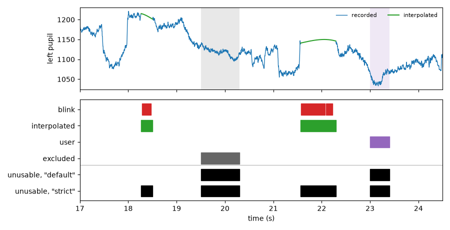

Missing data#
Eye-tracking data have gaps and bad samples: the eye tracker loses the pupil during a blink, the gaze leaves the screen, or a part of the recording (e.g., a break) is not part of the analysis. In short:
Bad samples are marked, not deleted. Each method that finds bad samples marks them with its own layer (e.g.,
"blink","offscreen"). The values stay as they are, so you can always see why a sample is bad, and undo a step.Analyses skip marked samples automatically. Segments, statistics, filters, downsampling etc. use only the usable samples.
Interpolated samples are used. After
blinks_interpolate(), the reconstructed blinks count as usable. Passpolicy="strict"to leave them out.
The tutorial Missing data goes through these steps with a real recording.
A typical example#
import pypillometry as pp
from pypillometry import u
d = pp.get_example_data("rlmw_002_short")
d.pupil.blinks_detect() # marks blinks ("blink" layer)
d.gaze.mask_offscreen() # marks gaze outside the screen ("offscreen")
d.pupil.blinks_interpolate() # reconstructs the blinks ("interpolated")
d.plot.plot_masked() # where are samples unusable?
d.quality_report() # how much is missing, and why?
# the analyses use the usable samples only
epochs = d.get_epochs("S_", (-200, 1000) * u.ms)
seg = d.get_segments(epochs, "left_pupil") # with interpolated blinks
seg_rec = d.get_segments(epochs, "left_pupil", policy="strict") # recorded samples only
d.clear_layer("offscreen") # undo: the off-screen samples are usable again
Missing samples that the eye tracker did not record are NaN in the data (Eyelink codes them as 0; they are converted to NaN when an EDF file is read, see Loading and saving data). NaN samples are always unusable.
Why a sample is marked: layers#
Each channel (e.g., left_pupil) has its own layers; a layer only
exists on the channels the method checks.
layer |
meaning |
set by |
|---|---|---|
|
the pupil was lost during a blink |
|
|
the gaze (x, y) is outside the screen |
|
|
the two eyes point to different places (x, y) |
|
|
marked by hand |
|
|
the value was reconstructed (makes a sample usable) |
|
|
not part of the analysis (e.g., breaks), for all channels at once |
Running a detector again replaces its layer, so trying other parameters
does not add up masks. d.clear_layer(name) removes a layer, e.g.,
d.clear_layer("blink") undoes blink detection. Blinks are only
detected on the pupil: the gaze is usually NaN during blinks anyway.
Off-screen gaze does not mark the pupil, because whether the pupil size is
still valid then depends on the setup (see Common tasks to mark it).
You can add layers of your own, e.g.,
d.data.set_layer("left_pupil", "saccade", mask); they mask samples
only where you name them in a policy (policy=["saccade"]).
Which samples are used: policies#
All methods that read the data take a policy= argument that decides
which samples are unusable:
policy |
unusable samples |
|---|---|
|
NaN and all layers (blinks, off-screen, divergence, user, excluded), but interpolated samples are used |
|
the same, and the interpolated samples |
|
nothing (values can be NaN) |
A policy can also be a list of layers (only these and NaN make a sample
unusable), e.g. policy=["blink"], or a MaskPolicy of your
own.
The figure shows the layers of the left pupil during a few seconds of a recording after blink detection and interpolation, with a period excluded and a period masked by hand, and which samples each policy leaves out:

Note
Under the default policy, an interpolated sample is usable even if
another layer (e.g., "blink") is set for it: its value was
reconstructed, so the reason for masking the recorded value no longer
applies. Excluded periods stay unusable, also where data were
interpolated.
Common tasks#
Leave out interpolated samples. Pass policy="strict", e.g. to
get_segments() or stat_per_event(). To drop
trials that are mostly reconstructed, compute the share of interpolated
samples per trial and keep the others:
stim = d.get_epochs("S_", window=(-500, 2500) * u.ms)
seg = d.get_segments(stim, "left_pupil", policy="strict")
recon = np.ma.getmaskarray(seg["left_pupil"]).mean(axis=0) # one value per trial
seg = seg.keep(recon < 0.25)
Mask the pupil where the gaze is off the screen. Copy the off-screen periods of each eye to its pupil:
off = d.get_layer_intervals("offscreen", variables="x")
d.mask_intervals({"left_pupil": off["left_x"], "right_pupil": off["right_x"]})
(Where these periods overlap an interpolated blink, the samples stay
usable under the default policy; use policy="strict" to leave them
out as well.)
Exclude the parts that are not part of the experiment, e.g. breaks or the calibration (see Masks, layers and policies). Do this before detecting blinks, so that blinks are cut at these periods:
d.exclude_intervals(d.get_intervals(start="break_start", end="break_end"))
d.keep_intervals([(first_onset - 1000, last_onset + 3000)]) # in ms
Look at one reason only. d.get_layer_intervals("offscreen") gives
the stretches of one layer; d.mask("left_x", policy=["offscreen"])
the mask of only this layer (and NaN).
Undo a step: d.clear_layer("blink"), d.clear_layer("offscreen"),
d.clear_layer("excluded"). Interpolated values cannot be restored
from the object; keep a copy (d | step returns a processed copy, see
Pipelines and history).
Looking at masks#
call |
result |
|---|---|
|
masked array (masked: unusable under the default policy) |
|
boolean array, True where unusable |
|
copy of the values, NaN where unusable |
|
the stored values (masked samples keep their values) |
the stretches of a layer as |
|
the stretches of unusable samples under a policy |
|
the excluded periods and the periods between them |
|
plot of the unusable stretches (with |
|
missing data and masked time per layer (see Data quality) |
d.data.layer_names lists the layers that have been set, and
d.data.get_layer("left_pupil", "blink") gives one layer as a boolean
array (d.data.get_rec_layer("excluded") for the excluded periods).
Details#
This section describes exactly how each operation treats unusable samples. You rarely need it for a standard analysis.
Detecting and interpolating#
blinks_detect()looks for runs of NaN (andblink_val) in the stored values and for blinks in the velocity profile of the recorded samples, so it can find blinks where no sample is NaN. Blinks are cut at excluded periods (a break without data is not a blink).blinks_interpolate()replaces the pupil values in each blink (extended by a margin) and sets the"interpolated"layer there; the"blink"layer stays, so recorded and reconstructed samples can always be told apart.interpolate_intervals()does the same for any intervals. Interpolations add up in the"interpolated"layer, so different artifacts can be interpolated one after the other.d.clear_layer("interpolated")keeps the interpolated values but makes these samples unusable again where another layer masks them.
Processing and analysing#
All processing and analysis methods read the samples that are usable
under their policy argument (by default, the default policy):
method |
unusable samples |
|---|---|
bridged linearly for the filter; only the usable samples are changed, unusable samples keep their stored values |
|
left out of the fit |
|
left out of the window means; a layer is set for a new sample if it covers more than half of its window (counted for each layer separately); a window without usable samples stays unusable |
|
left out of the center and scale (e.g., mean and SD) |
|
each eye contributes its usable samples, recorded ones first (an
interpolated sample only where no eye has a recorded one); the
merged channel is masked only where no eye is usable and gets the
layers common to the eyes used (otherwise |
|
values and layers are cut together |
|
inserted samples are NaN |
|
masked in the segments (also parts of a window outside the recording) |
|
left out of each statistic |
|
missing data are counted from NaN, masked time per layer; excluded periods are left out of all measures |
The layers are saved with the object and restored when it is read.
Changing masks by hand#
mask_intervals()adds intervals to the"user"layer;d.data.add_mask(key, where)masks samples by index.d.data.set_mask(key, mask)makes the default mask of a channel equal tomask: it removes the layers from samples that should be usable and puts the newly masked samples into"user"(NaN samples and excluded periods stay masked).merge_masks()masks every channel where any channel is masked ("user"layer).
Changing values#
Writing new values into an existing channel can change its layers:
d["left_pupil"] = array(a plain numpy array) removes all layers of the channel; only NaN samples and excluded periods stay masked.d["left_pupil"] = masked_arraymakes the default mask of the channel equal to the mask of the array (liked.data.set_mask). This can drop layers:d["left_pupil"] = d["left_pupil"] * 2after interpolation drops the"blink"layer, because interpolated blinks are usable and so not masked ind["left_pupil"].To process the values of a channel yourself and keep all its layers, use
set_with_mask:
v = d.data["left_pupil"] # the stored values (numpy array)
d.data.set_with_mask("left_pupil", my_filter(v), preserve_mask=True)
A new channel (d["left", "baseline"] = array) starts without layers;
excluded periods mask it as well.
Things to watch for#
Masked samples keep their values.
d.data["left_pupil"]holds the stored values, also in blinks (e.g., unfiltered afterlowpass_filter()). Used["left_pupil"]ord.get_values(...)for the usable samples only.Detect and interpolate blinks once, on the raw data. Detecting blinks again after interpolating is skipped (with a warning) for eyes with interpolated samples, and interpolating twice makes the interpolated stretches longer by the margins.
Exclude periods before detecting blinks, so that blinks are cut at them. A blink that ends in an excluded period is not interpolated (there is no usable data after it).
Merged eyes keep only the layers common to both eyes: where one eye was interpolated and the other recorded,
mean_pupilholds the recorded value and has no"interpolated"layer.Downsampling counts each layer separately: a window that is 40% off-screen, 40% divergent and 20% usable is usable after downsampling (the mean of the usable 20%).